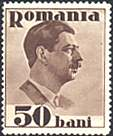
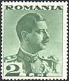
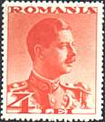
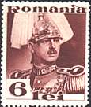
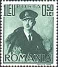
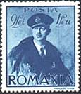
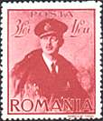
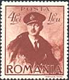
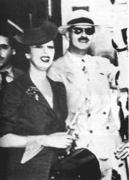

FROM DICTATORSHIP TO FASCISM
Carol II
(1893-1953) was the king of Romania between 1930 and 1940. Son of the King Ferdinand I, Carol was born
in Sinaia. He became crown prince in 1914, when his father ascended the
throne. His first marriage, to a commoner, was dissolved, and in 1921 he
married a Greek princess. Four years later he left his wife, renounced his
right to the throne, and went into exile in order to live with his mistress,
Magda Lupescu. He returned in 1930, at the invitation of Prime Minister Iuliu
Maniu, and he was crowned king, replacing his young son, Michael, who had been
placed on the throne under a regency in 1927. Despite opposition from the
politicians, Lupescu joined Carol II in 1931.
Following his authoritarian bent, Carol gave covert
support to the Iron Guard, the Romanian Fascist movement, but later became
alarmed by its grows and popularity. A contest between
the king and the fascist Iron Guard ensued, with assassinations and
massacres on both sides. He
then (1938) established a royal dictatorship and had the Iron Guard leaders
executed.
|
 |
 |
 |
 |
The country remained neutral at the outbreak (1939) of World War II, but in 1940 it became a neutral partner of the Axis powers (Germany and Italy). Romania was powerless (1940) to resist Soviet demands for Bessarabia and N Bucovina or to oppose Bulgarian and Hungarian demands, backed by Germany, for the S Dobrogea, the Banat, Crisana-Maramures, and part of Transylvania. The Iron Guard, thirsty of power, rose in rebellion against Carol's surrender of these territories. King Carol was deposed (1940) and exiled, and Michael returned to the throne. The army gained increased influence and the Marshal Ion Antonescu became dictator. His next step will be the creation of a National-Legionary State.
|
 |
 |
 |
 |
Carol II was a passionate stamp collector, and also for this reasons during his reign appeared some of the most beautiful Romanian stamps.
 |
Lupescu, Magda (Elena), Pronounced as: mägdä
loopeskoo, (Hertza, Bukovina, Austrian Empire, 15 Sep 1899 -
Estoril, Spain 29 Jun 1977) became the third wife of Carol II of
Romania. Carol renounced in 1925 his succession to the throne for her,
but after becoming king (1930) he installed her as his official
mistress. She was accused of exerting a corrupting influence on
Romanian politics; part of her unpopularity was imputed to her Jewish origin. Lupescu shared Carol's exile from 1940, and married (1947) him in
Brazil, becoming Princess Elena. After the death of her husband (1953, in Portugal), she
lived in Portugal and in France. On January 21, 2003 the Romanian government, the former royal family, and the Romanian Orthodox Church have agreed to bring the remains of King Carol II and of his third wife, Elena Lupescu, to Romania. This happened in the month of February 2003. They will be interred at the Curtea de Arges Monastery, that is the traditional burial place of Romanian royalty. The distance between their tombs will be of about 100m. The photograph was taken in Caribbean, in exile, after the abdication of Carol II. |
Sources: Microsoft Encarta, Encyclopedia.com, Simon Wiesenthal Multimedia Learning.
Links: